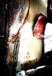

 Philip Metals, Inc. is a metal recycling center in Nashville, Tennessee where I was allowed to photograph, videotape and record sounds before I moved to the DC area in April, 2003. This series of source materials were combined with Chilton's Industrial Machine Shop stills, video loops and sounds for a multimedia installation in November, 2003 at Andee Rudloff's Morris Alley Studio, in Bowling Green, Kentucky. TeZ of Submultimedia Labs and Jason Stelluto of Windowpane Productions collaborated with me to create this multimedia show, Unlikely Canvases. Click here to see a video from the reception in Bowling Green.
Protoquadro:: Unlikely Canvases: An ever-changing generative digital canvas based on these photos.
Concept: Form is temporary. An everchanging interplay between order and chaos is the norm. We are all returning to the one source of life in our various states of grace, chaos and order. Through a multimedia installation, the viewer will experience a metal recycling center and industrial machine shop where machines are repaired, as the machines and scrap metal are recycled into bits for new life or repaired for an extension of life in their current forms. The heaps of metal and well-worn machines are unlikely canvases which show us a natural poignancy and passion that are like human souls as we are transformed by our life experiences. If you perceive the world as a whole, where nothing is really solid and each entity consists of energy, elements and form, then there really is no distinction between Nature, human beings and machines, that all is Nature.
Our current forms are temporary and we are more at one with the world than we ordinarily perceive.
The experience of a metal recycling center and an industrial machine repair shop are transformed through photography, video and music into a place where we are connected with the energy all around us. Ordinarily we see machines as destructive, as against Nature, as separate, cold and lifeless. But when the form is not wasted but is respected, and recycled, we are acting in harmony with the natural order and respect for this oneness with Nature. This exhibit demonstrates that everything is an extension of Nature, that Nature includes all creation, that even metal and machines glow with life and can move our souls with their beauty and loss. Nature touches the machines and the metal with her chaos as well as orderly decomposition of the form with rust and decay. Man creates machines and interacts with them with ordered vision as well as random evidence of use, mimicking Nature.Our lives are unlikely canvases, and what would our souls look like if we could see them, not the even form we see every day to put clothes on, but the energy state of our souls? Our souls, underneath all of the coverings of spiritual, mental and emotional fluctuations, are whole and beautiful. Would our souls in the process of transformation, the struggles to release these temporary coverings, resemble these twisted bits of metal that are still beautiful in shape, or evocative upside down? Chaos makes you beautiful. Order makes you beautiful. The smooth as well as the rough.
What man was most afraid of early on was chaos: his stomach was orderly in its need for food, but how to get it was to confront chaos and chance. He learned in part to act with the natural rhythms of life around him, cycles, patterns he could count on. His power over Nature was to bring an illusory order -- to cut down the forest, to have a shaven view, devoid of the chaotic growth of the forest -- but Nature is chaos and can't be totally ordered by the mind or work -- part of the installation is to embrace chaos as part of us and Nature. That there is beauty in chaos as well as order -- to better accept the chaos in ourselves, we embrace ourselves as part of Nature, and we are more likely to survive our own machines.
Amy Jackson
©2003